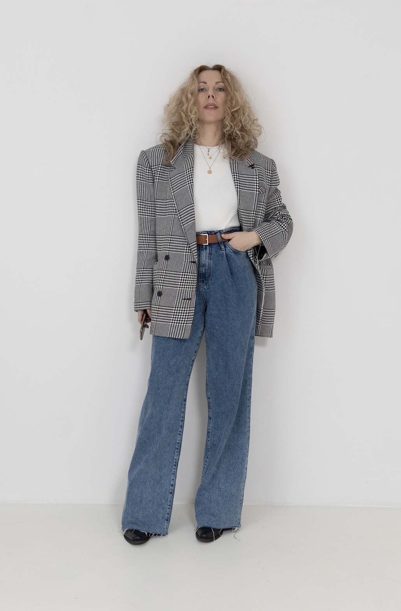

Over size stila žaketes joprojām turas tendenču augšgalā. Kombinējot ar platām biksēm un papildinajot ar kovboju zābakiem, var panākt brīvu sajūtu, kas ir ļoti aktuāli mūsdiienu stilam
Over size stila žaketes joprojām turas tendenču augšgalā. Kombinējot ar platām biksēm un papildinajot ar kovboju zābakiem, var panākt brīvu sajūtu, kas ir ļoti aktuāli mūsdiienu stilam
Reklāma